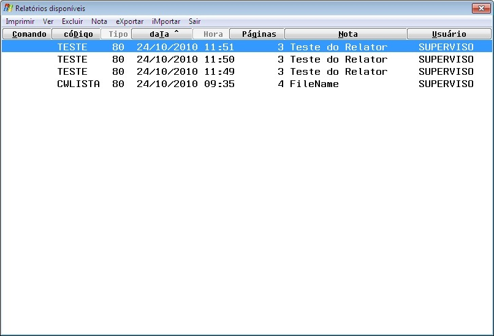
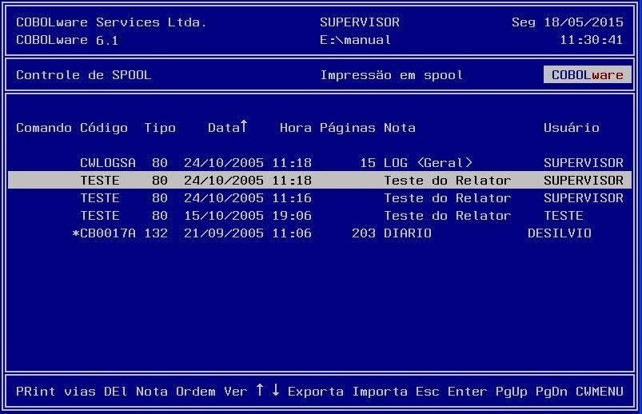
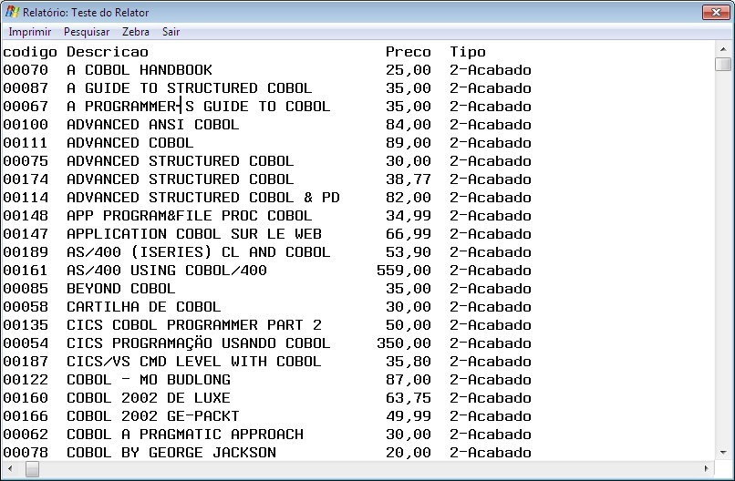
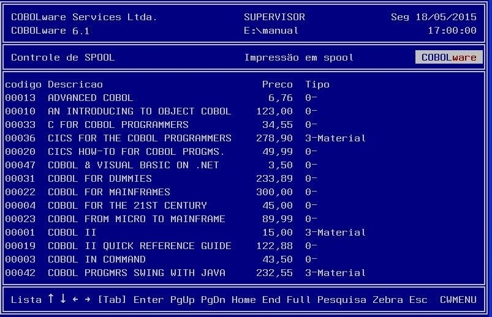

Manipulação de relatórios.
|
Modo gráfico |
|
 |
|
Modo texto |
|
 |
Imprimir/Print
Imprime o relatório selecionado, será exibida uma
lista das impressoras
cadastradas para seleção.
Ver
Visualiza
o relatório na tela permitindo pesquisas e impressão
parcial.
|
Modo gráfico |
Modo texto |
|
 |
 |
Excluir/Del
Remove o relatório selecionado.
Nota
Permite
alterar a nota de observação na lista de
relatórios.
Exporta
Gera
uma cópia do relatório selecionado em formato legível
para a importação em outra
instalação.
Importa
Carrega
no spool uma cópia de relatório gerada pela opção
Exporta.